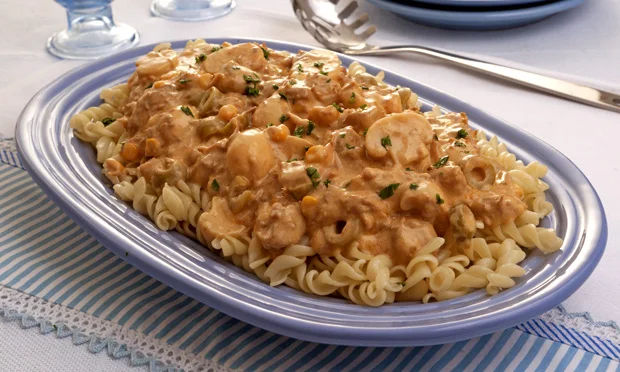

Stroganoff

How to make the best Stroganoff
Use chicken thigh fillets if you prefer in this chicken stroganoff, and use half-fat soured cream for a lighter version. Enjoy with pasta, mash or rice.
Ingredients
- 2 tbsp olive oil
- 4 skinless chicken breasts, cut into chunks
- 2 onions, finely chopped
- 4 garlic cloves, crushed
- 1 tbsp sweet paprika
- 400ml chicken stock
- 4 tsp Dijon mustard
- 200g soured cream or crème fraiche
- a large handful of parsley, chopped
- rice mash or pasta, to serve
Steps
- Heat half the oil in a frying pan and fry the chicken pieces over a medium high heat, stirring frequently. until golden brown. Season and transfer to a plate.
- Heat the remaining oil and lower the heat to medium. Fry the onion for 6-8 mins until softened but not golden, then stir in the garlic and paprika. Fry for a minute until fragrant, then pour in the stock, and add the Dijon. Tip in the seared chicken with any resting juices, and simmer for 5-6 mins until reduced slightly and the chicken is cooked through.
- Over a low heat, stir in the soured cream until just combined to create a creamy sauce, and it’s just started to simmer. Scatter over the parsley and serve with rice, mash or pasta, if you like.